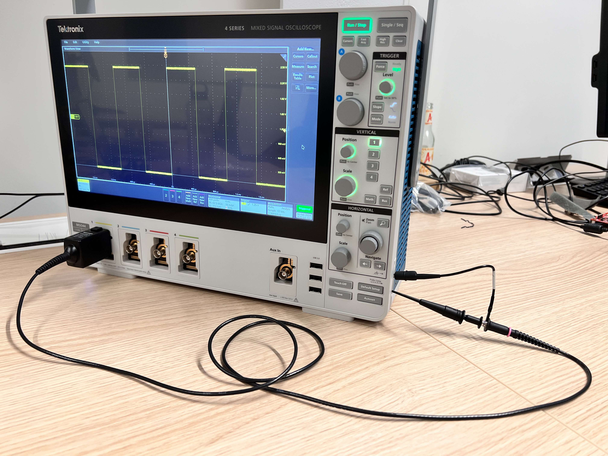

Usage
VISA, LXI, USBTMC…
See this blogpost for a quick overview of the different communication protocols first. We will communicate with the oscilloscope with VISA commands over TCP (LXI). Additionally, USBTMC will be used as a fallback mechanism in case the TCP connection is lost, and the oscilloscope needs to be reset.
Install
On a fresh debian 12 install, you can install the dependencies with:
sudo apt update && sudo apt install python3 python3-pip python3-venv libusb-1.0-0
Udev rules
1sudo -E usermod -a -G dialout $USER
2# Now logout
3cp 50-newae.rules /etc/udev/rules.d/50-newae.rules
4sudo systemctl stop ModemManager && sudo systemctl mask ModemManager
5sudo udevadm control --reload-rules && sudo udevadm trigger
6# Did you logout?
Package installation
1python3 -m venv venv
2source venv/bin/activate
3pip3 install pymso4
Connection
The oscilloscope is connected to the computer both via USB and Ethernet. This is to have a failover mechanism in case the TCP connection is lost (which happens more often than expected). When the oscilloscope stops being reachable via TCP, the USB connection is used to perform a soft reset. Code in the examples shows how to handle disconnections.
USB
Use a USB-B to USB-A cable to connect the oscilloscope to the computer. Plug the cable in the “Device” port on the back of the oscilloscope, and the other end to the computer.
Ethernet
I have connected the oscilloscope to the computer through a switch, but it should also be possible to connect the oscilloscope directly to the computer with Auto-MDIX.
Verify connectivity
To ensure the oscilloscope is reachable, run the following command:
1source venv/bin/activate
2pip3 install psutil # Necessary to discover TCP devices
3pyvisa-shell
4(visa) list
5( 0) USB0::1689::1319::C019654::0::INSTR
6( 1) TCPIP::192.168.1.140::INSTR
There should be at least 2 entries in the output, one for the USB device and
one for the Ethernet device. Test they are both connectable with open 0 and
open 1, and query each with query *IDN?.
Examples
Minimal usage example
Connect the probe on channel 1 to the calibration square wave output, and press the Autoset button, the following code will capture a trace of the signal as seen on the oscilloscope screen:
1import pyMSO4
2mso44 = pyMSO4.MSO4(trig_type=pyMSO4.MSO4EdgeTrigger)
3mso44.con(ip="128.181.240.130") # Using p2p ethernet connection
4mso44.ch_a_enable([True, False, False, False]) # Enable channel 1
5mso44.acq.wfm_src = ['ch1'] # Set waveform source to channel 1
6mso44.acq.wfm_start = 0
7mso44.acq.wfm_stop = mso44.acq.horiz_record_length # Get all data points
8wfm = mso44.sc.query_binary_values('CURVE?', datatype=mso44.acq.get_datatype(), is_big_endian=mso44.acq.is_big_endian)
9mso44.dis()
Square calibration wave
{kind=link}
The example in ex0_square_capture.ipynb shows how to acquire a square wave from the oscilloscope and plot it.
1source venv/bin/activate
2cd examples
3pip3 install -r cw305_requirements.txt
4jupyter lab ex0_square_capture.ipynb
CW305
The following examples will acquire power traces from a ChipWhisperer CW305 board.
The amplified signal from the CW305 (X4, top right) is connected to the
MSO4’s channel 1 with an SMA-BNC cable. The trigger signal (TP1, bottom
right) is connected to the MSO4’s channel 2 with a standard probe (ground to
any metal part of the CW305).
{kind=link}
cw305_capture_ch1_trigger_ch2.ipynb
This notebook will acquire a limited amount of power traces from the board and plot them.
1source venv/bin/activate
2cd examples
3pip3 install -r cw305_requirements.txt
4jupyter lab cw305_capture_ch1_trigger_ch2.ipynb
Then open the link in the terminal (adjusting the IP if you’re connecting from a remote machine)
ex2_cw305_endurance.py
This script will acquire an indefinite amount of power traces from the board. It shows how to handle the unavoidable disconnects from the oscilloscope, and how to reset it.
1source venv/bin/activate
2cd examples
3python3 ex2_cw305_endurance.py
Troubleshoting
The MSO44 is an interesting beast, and sometimes it will not behave as expected, nor as the documentation says. In the report §5.2 I have documented some of the issues I have encountered and how I have solved them.